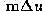
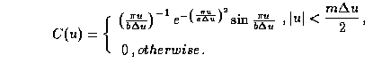
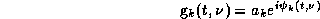
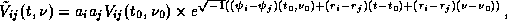
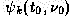
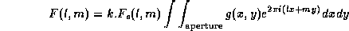

News
News
| Getting Started | Documentation | Glish | Learn More | Programming | Contact Us |
|
| VERSIONID |
News
|
A system of celestial co-ordinates based on the mean plane of the Galaxy, which is inclined about 63° to the celestial equator. Galactic latitude b is measured north (+) or south (-) from the Galactic equator, the great circle on the celestial sphere defined by the mean plane of the Galaxy. Galactic longitude l is measured eastward along the Galactic equator from the Galactic Center. Galactic co-ordinates are independent of precession.
A computer monitor displays colors by exciting phosphors on the screen. Unfortunately, phosphors do not excite linearly. For example, if a computer reads a luminance value from a photographic image and sends it directly to the monitor, the displayed color will be dimmer than in the original photograph. The gamma correction adjusts for the nonlinearity of phosphor excitation. (The gamma is the numeric power to which the video signal voltage is raised to obtain a linear light response).
A useful gridding convolution function, of support width equal to the width  of m u-v grid cells, is given by the separable product of two Gaussian-tapered sinc functions, each of the form

The choice
m = 6,
a  2.52, and
b 1.55, yields what is,
in a certain natural sense, an optimal gridding convolution function of
this particular parametric form
(see F. R. Schwab, Optimal gridding, VLA Scientific Memo. No. 132).
Also see
spheroidal function.
2.52, and
b 1.55, yields what is,
in a certain natural sense, an optimal gridding convolution function of
this particular parametric form
(see F. R. Schwab, Optimal gridding, VLA Scientific Memo. No. 132).
Also see
spheroidal function.
Green Bank Telescope: the world's largest fully steerable single-dish radio telescope, under construction at the NRAO's facility in Green Bank, West Virginia. The GBT has a unique off-axis design intended to reduce sidelobe responses, and is due to be completed in 1997.
When an interferometer whose baseline vector is b points
toward an astronomical object in the direction of unit vector s,
the wavefront from the object reaches one element of the interferometer
at a time  = b·s/c later than the other. This time is
the geometrical delay for the observation.
= b·s/c later than the other. This time is
the geometrical delay for the observation.
For an observation made at a specific wavelength
 ,
it is often useful to represent the geometrical delay as a
distance measured in units of that wavelength. In this form, it is the w of the u-v-w co-ordinates of the
baseline for the particular observation.
,
it is often useful to represent the geometrical delay as a
distance measured in units of that wavelength. In this form, it is the w of the u-v-w co-ordinates of the
baseline for the particular observation.
In the neighborhood of a discontinuity of a periodic function f, the overshoot and oscillation (or ringing) of the partial sums S(n) of the Fourier series for f. In the vicinity of a simple jump discontinuity, S(n) always overshoots the mark by about 9%, even for large n. (See H. S. Carslaw, Introduction to the Theory of Fourier's Series and Integrals, Dover, New York, 1930, ch. IX.)
In harmonic analysis, often the Fourier coefficients are multiplied by a weight function tending smoothly to zero at the boundaries of its support, in order to smooth out the discontinuities and thereby reduce the ringing in the synthesized spectrum. (This degrades the spectral resolution, however.) See Hanning smoothing function. For a discussion of Gibbs' phenomenon in the context of VLA cross correlation analysis, see Larry D'Addario's Lecture No. 4 in the Third NRAO Synthesis Imaging Summer School.
Graphics Interchange Format: a standard for compressing digitized images without losing information, using the Lempel-Ziv Welch algorithm.
Graphics Interchange Format and GIF are service marks of CompuServe, Inc. who defined the detailed standard in 1987 and 1989. Following legal action by Unisys against CompuServe in 1994 for violating Unisys's Lempel-Ziv Welch software patent, royalty payments are expected of programmers who write GIF encoders. These do not affect users of such programs, or GIF decoders, however. Despite controversy about this, GIF remains a standard format for image storage and transfer in multimedia hypertext systems such as the World-Wide-Web.
A command line interpreter loosely based on the S programming language, which is commonly used for statistics. Glish offers a convenient syntax for manipulating whole arrays (augmented by AIPS++ to be multi-dimensional). It also has a flexible, and hierarchical, record data structure. Glish also implements a ``software bus'' which allows for building loosely-coupled distributed systems from modular, event-oriented programs. In general Glish uses a centralized communication model where interprocess communication passes through the Glish interpreter, allowing dynamic modification and rerouting of data values, but Glish also supports point-to-point links between processes when necessary for high performance.
Glish is written by Vern Paxson and is available from ftp://ee.lbl.gov/glish. Information about the AIPS++ version of Glish can be found at http://aips2.nrao.edu/docs/glish/glish.html. (In general, the AIPS++ version may have features which have not yet been merged into the main Glish distribution). The Glish Users' Manual is at http://www.cv.nrao.edu/glish/manual
An antenna-based algorithm (in the spirit of the self-calibration algorithm) for fringe searching in VLBI. For an n element array, the classical VLBI fringe fitting technique, a correlator-based method, requires the estimation of n²-n parameters. The global fringe fitting method reduces this number to 3n-3. Expressing the antenna/i.f. gain for antenna k of the array as

(here we include a frequency dependence) one has that the observed visibility on the i-j baseline, is given to first order by

where V is the true visibility, and where the r are the antenna residual fringe rates and the the antenna residual delays.
Given a source model, one may solve for the , the r and the , using either a least-squares method or a Fourier transform method. Because of the overdeterminacy provided by a simultaneous solution for the parameters, this method allows proper delay and fringe rate compensation of data on baselines of too low signal-to-noise for the correlator-based method to work effectively. A full description of the method is given by F. R. Schwab and W. D. Cotton in Global fringe search techniques for VLBI, Astron. J., 88 (1983) 688-694.
In AIPS++, a global function is a Glish function that can be executed in any context, unlike a tool function, which can only be invoked in conjunction with a tool.
The GNU General Public License is a form of copyright that is commonly applied to software that the authors wish to distribute for the common good. Paraphrased, it says that the software may be altered and re-distributed as desired but that the original code must also be distributed. AIPS++ is covered by the GPL. For more details on the GPL, see the complete form.
A complex function g(x,y) describing the amplitude and phase of the current distribution as a function of rectangular co-ordinates (x,y) over the exit or input aperture of an antenna. Also known as the illumination function. When normalized by the amplitude of the current at the point of maximum current density, also known as the taper function (compare u-v taper function for interferometry).
The far field (or voltage) pattern of the antenna F(l,m) is determined by the Fourier transform of the grading function, multiplied by the voltage pattern F(l,m) of the individual current element:

where the constant k has the value that makes F(l,m) = 1 at its maximum. The power pattern (see also primary beam) is the square of F(l,m).
(GUI): the use of bitmapped graphical elements, such as menus, icons, buttons, windows, dialog boxes and cursors to mediate a user's interaction with an application program or with a set of such programs. The concept originated in the early 1970s at Xerox's PARC laboratory.
1. As applied to an image,
composed of (discrete) shades of gray. If the pixels
of a gray-scale image have n bits, they may take values
from zero, representing black, up to
2 -1, representing
white. Intermediate values represent increasingly light shades of gray.
If n=1, the image is not called gray-scale but
black-and-white (or a line drawing).
-1, representing
white. Intermediate values represent increasingly light shades of gray.
If n=1, the image is not called gray-scale but
black-and-white (or a line drawing).
2. A range of accurately known shades of gray printed out for use in calibrating those shades on a display or printer.
In radio interferometric imaging, a function C, usually supported on a square the width of, say, six u-v grid cells, with which the u-v measurement distribution is convolved. The purpose is twofold:
See aliased response, gridding correction function, cell-averaging, dirty image, and uniform weighting.
With judicious choice of C, a high degree of aliasing suppression is possible. A high degree of suppression is desirable, even when there are no ``confusing'' radio sources very near the field of interest, because the effect is not only to reduce the spurious responses due to sources lying outside of the field of view, but also to reduce the response to sidelobes of the source of interest, which too are aliased into the image from outside the field of view. See spheroidal function.
In radio interferometry, the reciprocal of the Fourier transform of the gridding convolution function C. Since the image plane taper induced by the gridding convolution usually is very severe, the dirty image normally is corrected by pointwise division by the Fourier transform of the convolution function. Obviously C should be chosen such that its transform has no zeros within the region that is imaged. See dirty image.
You could now go back to the:
Copyright © 1995,1996,1999,2000 Associated Universities Inc., Washington, D.C.
abridle@nrao.edu, 19 July 1996, 11:30 EDT wyoung@nrao.edu, 15 February 1996 or 1,073,741,824
or 1,073,741,824